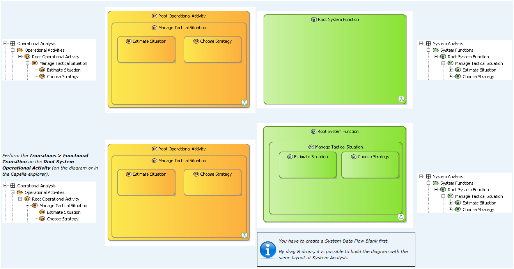
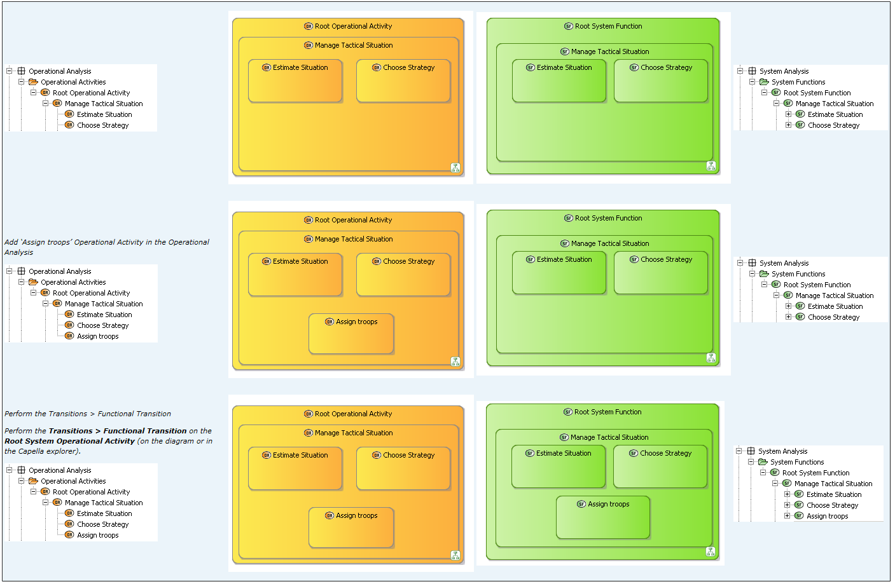
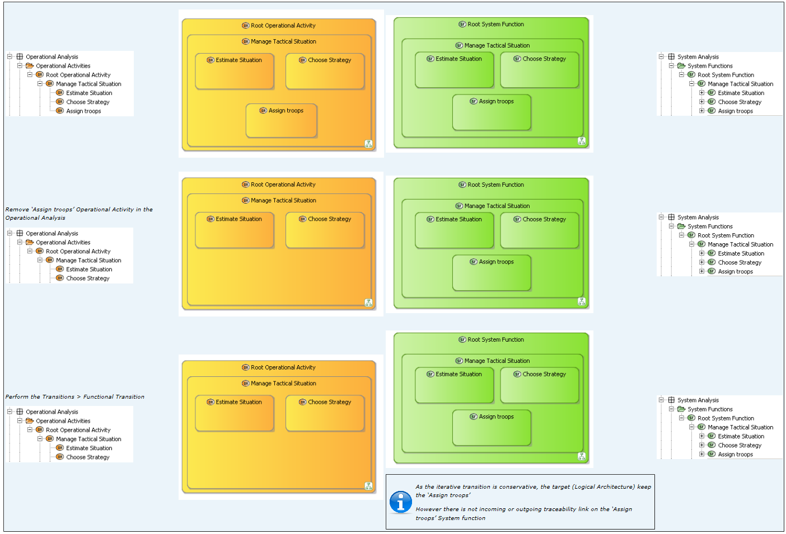
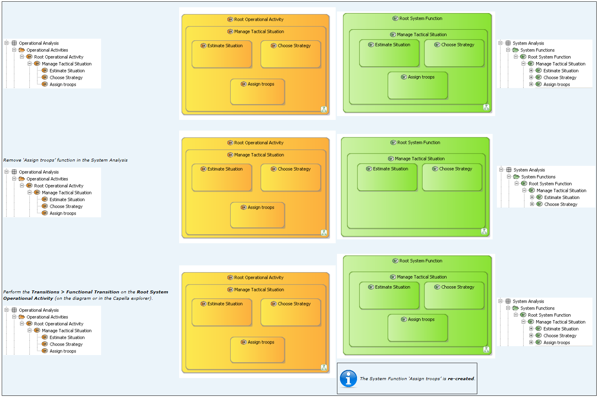
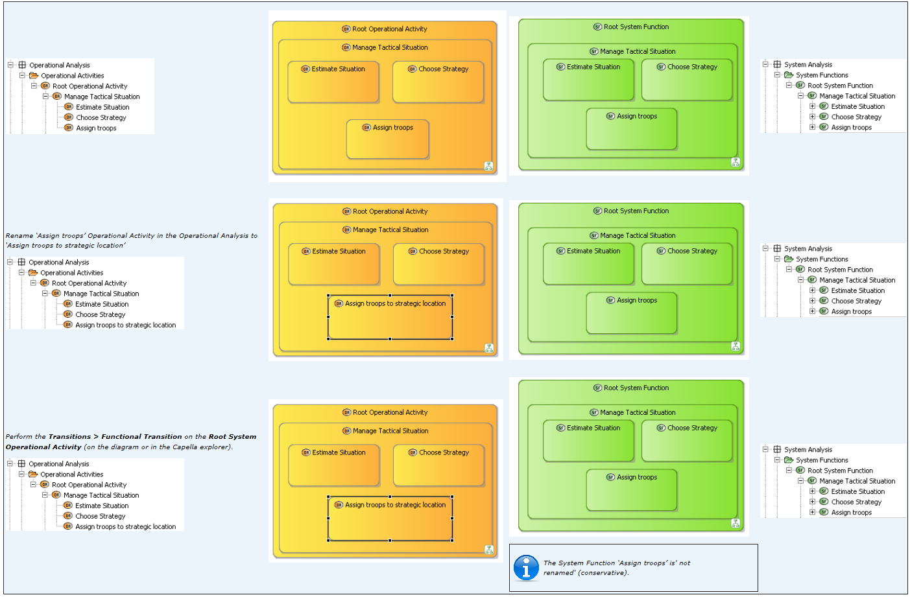
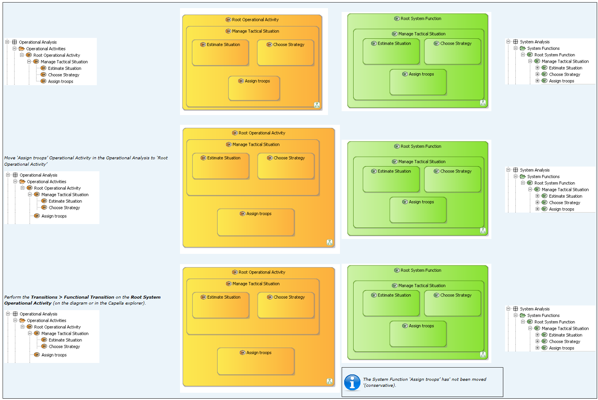
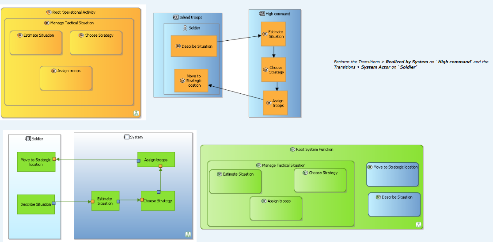

Let's consider the following analysis at Operational Analysis:
It can be described in a Operational Activity Interaction Blank:

Let’s perform the first transition (the System Analysis is considered empty, except default model elements)






Let’s consider the following situation:

The High command is realized by System and the Soldier is a System Actor (see the contextual menu):

The focus is on the transition to Operational Activity allocations to System Function allocations.
The Operational Activities to System Functions are automatically performs during the Realized by System and System Actor transitions.
